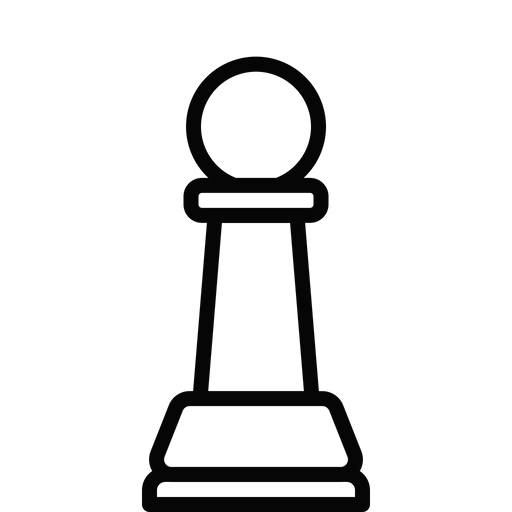

O peão parece, para o iniciante, ser bastante insignificante. Afinal, vale apenas 1 ponto, o mínimo de qualquer uma das outras peças de xadrez. No entanto, os peões podem ser muito importantes.
No início do jogo, cada lado tem 8 peões. Exceto em seu primeiro movimento, um peão pode mover-se apenas uma casa por vez. Os peões nunca podem se mover para trás. Quando um peão faz seu primeiro movimento, ele tem uma escolha; ele pode mover um quadrado ou dois. No entanto, ele se move um quadrado em todos os movimentos seguintes.

Se a casa imediatamente à frente do peão contiver outra peça, o peão não poderá se mover para frente. Ele está bloqueado.

Embora um peão se mova para frente, ele captura falando um quadrado diagonalmente para a frente. Na imagem abaixo, as brancas podem capturar a Torre ou o Cavalo. Isto é feito removendo a peça capturada do tabuleiro e substituindo-a pelo peão.